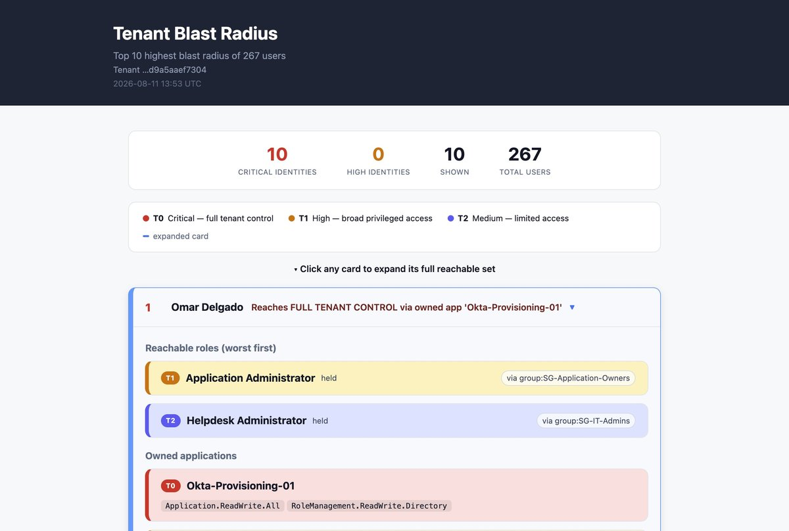
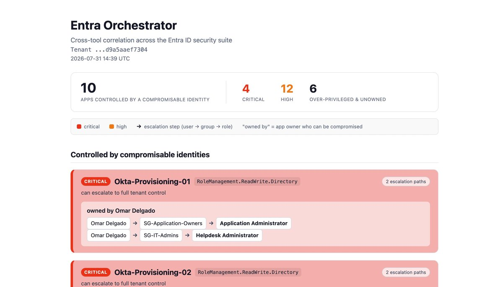
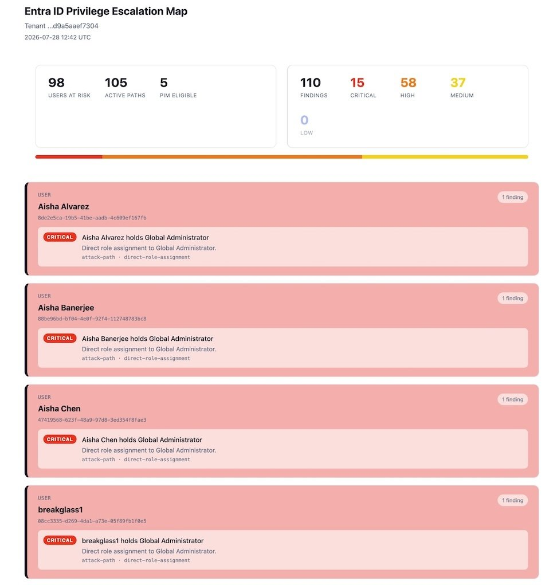
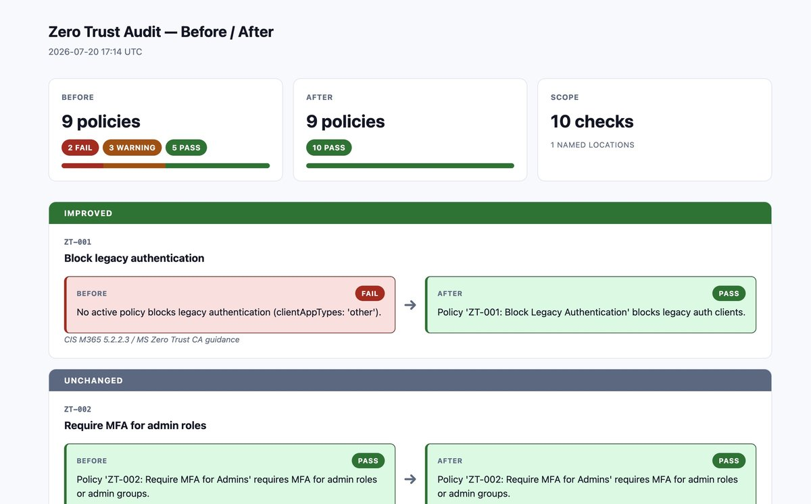
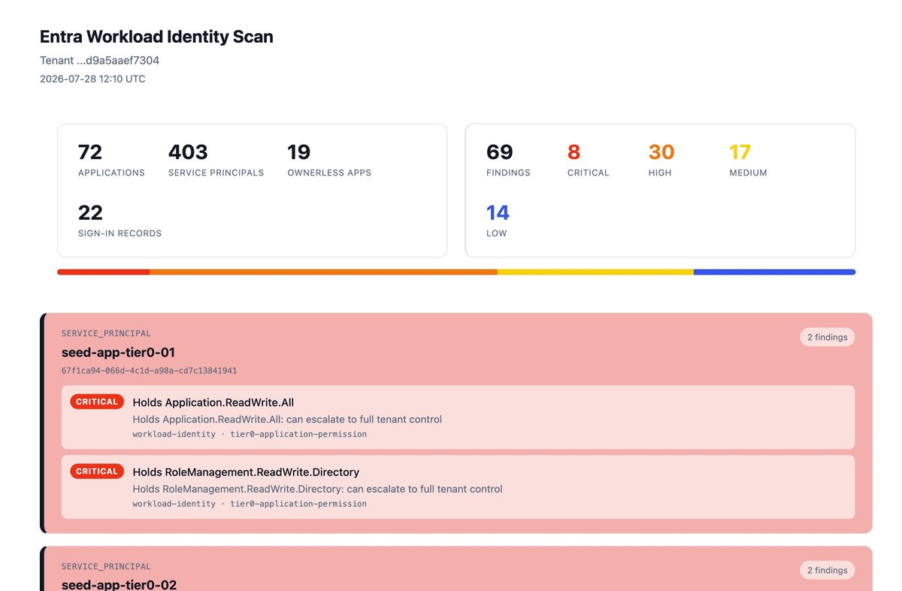

Scanners, audit engines, and visualizations that surface the privilege sprawl, stale workload identities, and policy gaps that manual reviews miss. Five tools and a shared library, all scanning live tenants via Microsoft Graph.
Currently open to IAM engineering and cloud security roles.
Each tool solves a different piece of the IAM audit problem. The orchestrator correlates findings across them. Every tool is adoptable: register an app in your own tenant, set a CLIENT_ID, and run it.
Given an identity, compute everything it can reach: roles, group inheritance, PIM-eligible roles, owned apps. Rank by worst privilege. Answers "if this account is compromised, how bad is it?" Run it for one identity, or rank every identity in the tenant by blast radius. Walks Graph's transitiveMemberOf server-side to resolve nested groups without client-side recursion, then weights owned apps by their Graph permission grants — an app holding RoleManagement.ReadWrite.Directory outranks a direct Global Admin.

Runs the attack-path and workload scanners together, correlates their findings, and surfaces apps controlled by compromisable identities. The cross-tool risks neither scanner catches alone: an overprivileged app owned by a user who reaches admin through a nested group. Joins findings on object ID so an escalation path from the attack-path scanner and a stale-credential finding from the workload scanner surface as a single correlated risk.

Detects privilege escalation paths through direct role assignments, nested group memberships, and PIM-eligible roles. Every path is a structured finding with stable identity across scans, so re-running produces automatic diffs: what's new, what got fixed. Each finding gets a deterministic hash from its path components — same escalation route produces the same ID across runs, enabling drift detection without an external database.

Audits Conditional Access policies against CIS M365 Foundations Benchmark and Microsoft Zero Trust guidance. Generates before/after gap reports showing what's passing, failing, and improved. Deploys remediation via Terraform in report-only mode — policies land in Conditional Access as report-only so you can validate before enforcement, with a full diff of what changed.

Audits app registrations and service principals for overprivileged permissions, expired credentials, ownerless apps, and stale workload identities. One async pass over the tenant, explainable findings with the fact that produced each one. Batches Graph calls with aiohttp to scan hundreds of app registrations in seconds, and tags every finding with the specific permission grant or credential state that triggered it.

Structured findings, persistent scan history, and diff-aware HTML reports. Used by the three scanners above. Every finding carries a stable hash so the tools can answer "what is new since last run" and "what got fixed" without external state.
I'm Darius Frank, an IAM and cloud security practitioner based in Colorado. I build tooling that automates the audit and compliance work that IAM teams do by hand — scanning Entra ID tenants for privilege sprawl, stale credentials, policy gaps, and the indirect escalation paths that manual reviews miss.
Everything here runs against live tenants via Microsoft Graph and produces reports you can hand to an auditor or a CISO.